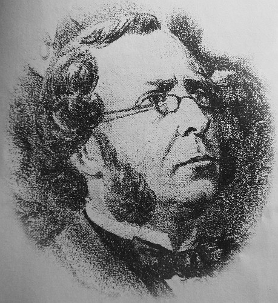
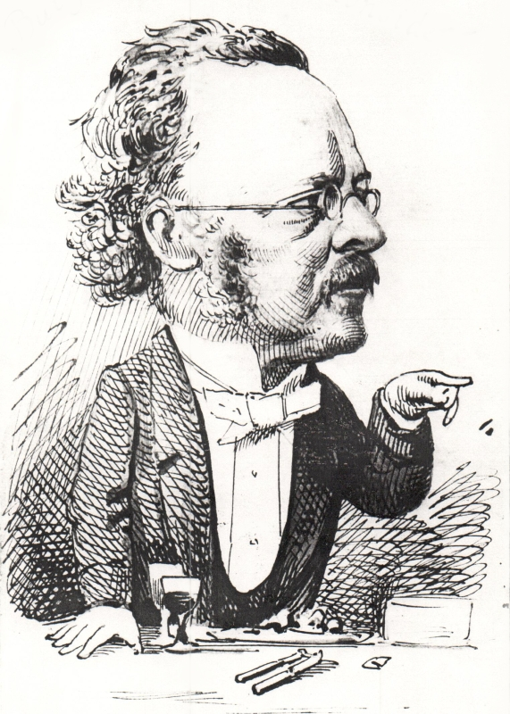

Henry Luce Manuel - L.
(9/6/1818 - 2/12/1875)
 
Henri Luce Manuel 'tait fis d'Henri Manuel et p'tit-fis d'Matthieu Manuel tch'était natif dé Béziers en Languedoc, ch'tî-chîn s'étant êtablyi en Jèrri. H. Luce Manuel fut né en 1818 et présenté au bâptéme à l'Églyise dé St. Hélyi lé 21 dé Juîn dé ch't'année-là. Sa méthe 'tait la fil'ye du cap'taine Pickstock - un célèbre corsaithe du dgiêx-huitchième siècl'ye. San péthe, Henri Manuel, 'tait tangneux d'mêtchi.
Henri Luce Manuel fut Officyi du Connêtabl'ye dé Saint Hélyi 1839 à 1846, et en 1842 i' fut appouainté Enregistreux pouor la pâraisse. Admîns comme Notaithe en 1844, en 1846 i' d'vînt Seurvillant, et pus tard Protchuleux du Bein Publyi pouor bein d's années. I' 'tait un p'tit homme mais i' n'lî mantchait ni couothage ni vidgeu. I' fut journaliste pouor un temps, et pis étout i' s'mînt en parchonn'nie auve d'autres comme bantchièrs. I' s'trouvit en embarras pus d'eune fais à cause dé chein tch'il êcrivait. Mais i' s'otchupait hardi étout entouor de choses tchultuthelles et fut ségrètaithe dé plusieurs sociêtés.
Mais sa r'nommée fut sustout à cause dé sa poèsie en Jèrriais. I' sé sîngnait tréjous "L", et plusieurs des titres dé ses vèrsets suggéthent qué san style est pûtôt élégiaque.
Henri Luce Manuel avait mathié Elizabeth de Veulle, i' mouothit siez li dans La Rue Duhamel, à St. Hélyi, lé 2 d'Dézembre en 1875.
« Les pièces de M. Henry Luce Manuel, qui signe L., tiennent beaucoup de place dans ce recueil », êcrit Abraham Mourant; « elles n'ont pas le même caractère que les autres. Il a abordé le caractère élégiaque que personne n' avait tenté avant lui et il a très bien réussi ».
Roger Jean Lebarbenchon êcrit dans san livre La Grève de Lecq qué "Esprit fin, Henry Luce Manuel est plus moraliste que moralisateur. Ses pièces sont marquées par un romantisme teinté de valeurs bourgeoises. Un certain manque d'humour et de vigueur d'expression l'éloignent de ses contemporains M. Le Geyt et E. Le Hardy. Sa langue est faiblement dialectale, chez lui les calques du français sont renforcés par une orthographe simplifiante. C'est néanmoins un bon psychologue du coeur féminin et un estimable auteur de chansons. Il ne masque pas son pessimisme. Dans cette littérature enracinée, il ne localise pas ses scènes et ne donne pas à ses personnages des noms jersiais. Ce qui démontre, d'une certaine manière, que l'inspiration dialectale est capable aussi de dépasser une micro-culture pour tenter à l'universel."
{kind=link}